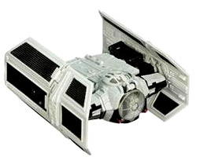
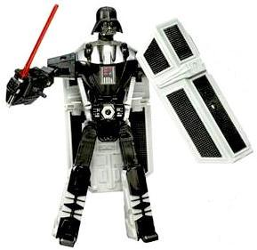
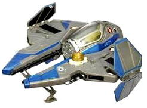
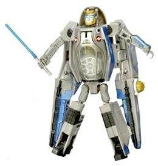

Price
: ~$28 U.S.
Overall Rating
: 8.0
Darth Vader


Difficulty of Transformation
: Medium
Color Scheme
: Black, light silvery
gray, and some clear plastic, silver, dark red, moderately dark blue, gold,
and dark gray
Individual Rating
: 8.3
(NOTE: Because this is a repaint, this is not a full-blown review. This mainly covers any changes made to the mold and the color scheme, and merely compares it to the original SWTF Darth Vader. For a review on the mold itself, read the review of the original SWTF Darth Vader here .)
This version of Darth
Vader is another one of those lame-o store exclusive "repaints" where practically
no effort was put into the thing at all. Basically, for this Wal-Mart exclusive
version, the dull dark blue on the original SWTF Darth Vader has been changed
to a light silvery gray. Otherwise, he's exactly the same as the mass-release
version. Boooo. Still, the light silvery gray does look better next to
the black than the dark blue, and I think makes for a slightly better color
scheme.
No mold changes have
been made to Wal-Mart Darth Vader.
Obi-Wan Kenobi


Difficulty of Transformation
: Medium
Color Scheme
: Gray, dark blue, and
some clear plastic, metallic gold, silver, white, black, mliky off-white,
sky blue, and transparent light blue
Individual Rating
: 7.7
(NOTE: Because this is a repaint, this is not a full-blown review. This mainly covers any changes made to the mold and the color scheme, and merely compares it to the original SWTF Obi-Wan Kenobi. For a review on the mold itself, read the review of the original SWTF Obi-Wan Kenobi here .)
Now Obi-Wan Kenobi here
is more of a proper repaint than Darth Vader. His shade of gray has been
changed to a slightly lighter shade, and his dark red has been replaced
with a nice shade of dark blue. That's not all that's changed, however--
although none of his paint masks have changed, some of his metallic bronze
parts have been replaced with a REALLY nice metallic gold, and a lot of
the dark brown parts have been replaced with black, which I think goes
with the other colors considerably better than the brown. Overall I think
it looks noticeably better than the original Obi-Wan SWTF toy, with the
colors contrasting considerably better.
No mold changes have
been made to Wal-Mart Obi-Wan Kenobi.
If you don't mind the concept of Star Wars Transformers, this is a hard set to not at least mildly recommend. You get a slight discount over what you'd get if you pick up both toys seperately, both toys have better paint jobs than their original mass-releases, and both are okay (though not spectacular molds). No real reason to pick up the originals now, if you don't have them already.
Reviews by Beastbot
(This formerly Wal-Mart exclusive version of Obi-Wan Kenobi was eventually mass-released in the Summer of 2008 as part of the initial wave of Clone Wars-packaged Star Wars Transformers Crossovers.)
(Images taken from www.hasbro.com/starwars )